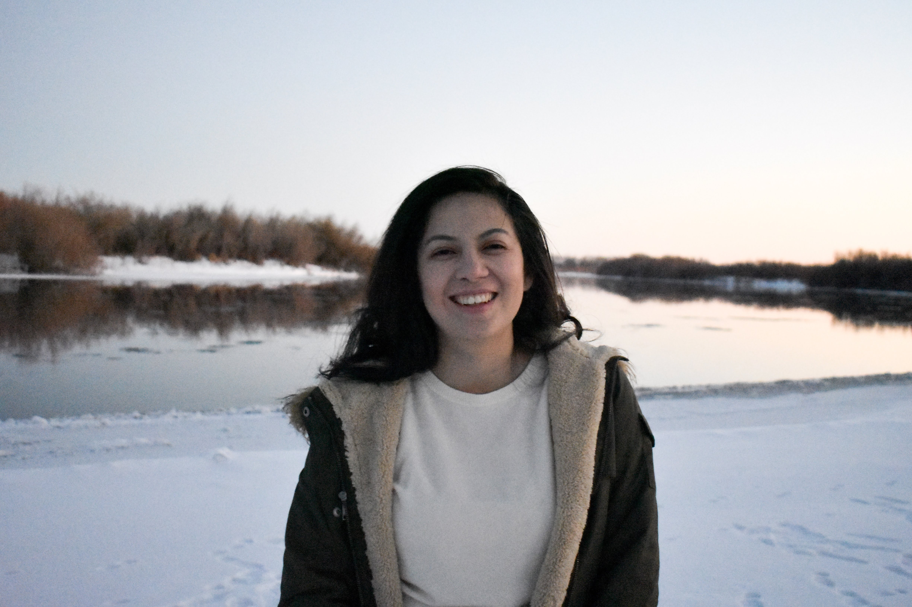

A little bit more about me
Who am I
My name is Astrid Lujo (I haven't changed my name with the school. Sorry! ). I was borned and raise in a small country named El Salvador, in Central America.
When I was 10 years old, my dad was invited to an special forum about BYU schools and he dreamed of me
and my brother coming to the United States to pursue our bachelor's degrees. He inspired me and My
brother to study hard and to pursue that dream to come here. I am the oldest sibling so I was the first
one to come to the United States.
I first started at BYU-Hawaii, where I met some of the most amazing people and made some awesome memories.
I loved every second of it but I made the decision to serve the lord as a full-time missionary. I send my
papers and I was called to serve in the California Oakland/San Francisco mission, Spanish speaking.
I reported to the MTC on October 2014, and I had the most amazing 18 months of my life serving others and
serving the Lord. I served 14 months of my mission in San Francisco and 9 months of them were in a ward
named El Camino. As I came home from my mission, I made the hard decision to leave my beloved island of
Hawaii and to transfered to BYU-Idaho. On semester at BYU-Idaho, I was serving as the Relief Society president
and I was going around making visits. In one of the apartments I visited, there was a guy named Christpher Lujo
that he looked so familiar. It clicked in my head that I served in his homeward (El Camino) for 9 months. I
presented myself and we talked about the bay. Later that day, someone knocked my apartment, when I opened
the door, it was Christpher with a friend of his. He told me that he didn't know I lived there and that
he was my home teacher. He came and home taught me and my roommmates and a couple of weeks later he asked me
out and the rest is history. We got sealed in the Oakland California Temple as it is his home temple and the
temple of my mission.
I love computer science. It's fascinating how you're able to create something that people can use and benefit
from it. I love web development and app development. I'm excited to learn new things and to apply them in what
I do. Thank you for reading! And visiting my page!